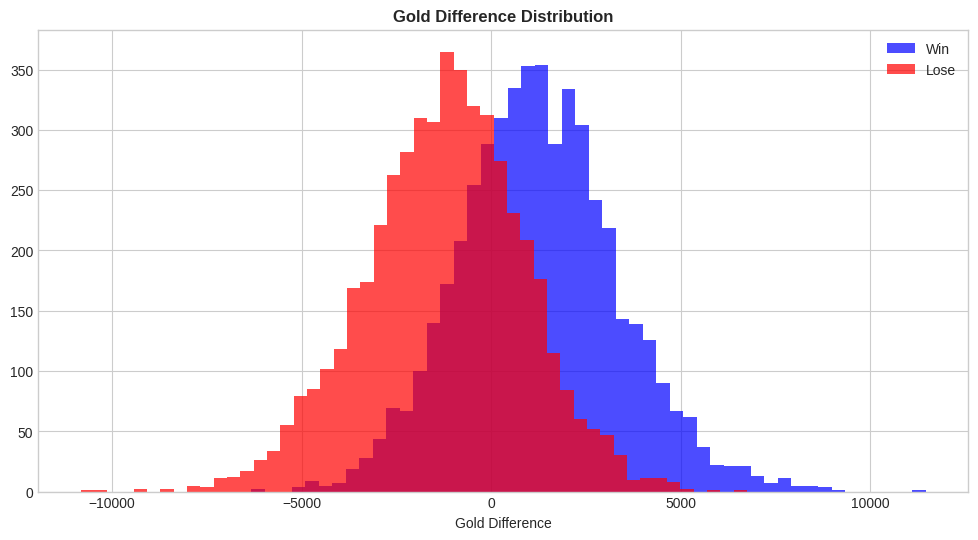
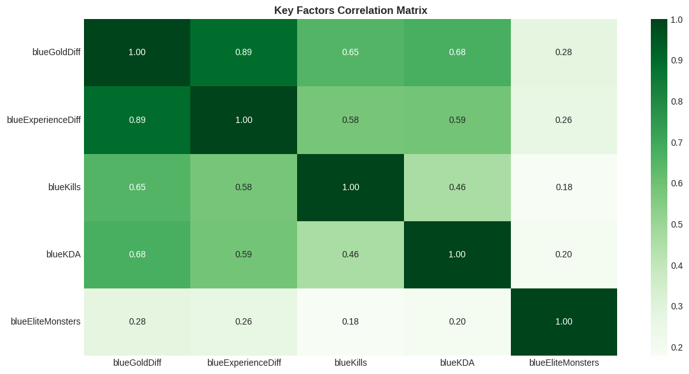

리그 오브 레전드
프로젝트 개요
본 프로젝트는 다이아몬드 랭크의 경기 시작 10분 데이터를 분석하여 어떤 주요 원인들이 게임 승리에 영향을 끼치는지 예측합니다. 리그 오브 레전드는 초반 스노우볼이 게임의 승패를 좌우하는 복잡한 MOBA 게임입니다.
프로젝트 목표
-
주요 승리 요인 분석: 다음 요소들과 승리의 상관관계를 분석합니다:
- 퍼스트 블러드(First Blood)의 영향
- 골드 격차 (Gold Difference)
- 오브젝트 관리 (드래곤, 전령)
- KDA 및 킬 차이
- 엘리트 몬스터 장악력
- 경기 결과 예측: 초반 10분 데이터를 기반으로 머신러닝 모델을 구축하여 승패를 예측합니다.
사용 기술 스택
- 언어 Python
- 데이터 Pandas Numpy
- 시각화 Matplotlib Seaborn
- 머신러닝 Scikit-learn Logistic Regression RandomForest LightGBM Bayes_opt
분석 프로세스
데이터 설명
데이터셋 출처: Kaggle - LOL Diamond Ranked Games (10 min)
주요 변수
타켓 변수가 블루팀 승리이므로 분석에 집중된 주요 변수들은 블루팀에 직접적으로 관련된 게임 요소 (features) 를 사용하였습니다. 테이블에 포함되지 않은 나머지 20개의 변수들은 똑같은 레드팀의 features 입니다.
| 변수명 | 설명 |
|---|---|
blueWins |
타겟 변수 (1: 블루팀 승리, 0: 레드팀 승리) |
blueWardsPlaced / Destroyed |
블루팀이 설치/파괴한 와드 수 |
blueFirstBlood |
블루팀의 퍼스트 블러드 획득 여부 (1: 획득, 0: 미획득) |
blueKills / Deaths / Assists |
블루팀의 KDA 지표 (킬, 데스, 어시스트) |
blueEliteMonsters |
블루팀이 처치한 총 엘리트 몬스터 수 (드래곤 + 전령) |
blueDragons / Heralds |
처치한 드래곤 및 전령의 수 |
blueTowersDestroyed |
블루팀이 파괴한 적 포탑 수 |
blueTotalGold |
블루팀이 획득한 총 골드 |
blueAvgLevel |
블루팀 챔피언 평균 레벨 |
blueTotalExperience |
블루팀 총 경험치 |
blueTotalMinionsKilled |
블루팀 총 미니언 처치 수 (CS) |
blueTotalJungleMinionsKilled |
블루팀 총 정글 미니언 처치 수 |
blueGoldDiff |
골드 격차 (블루팀 골드 - 레드팀 골드) |
blueExperienceDiff |
경험치 격차 (블루팀 경험치 - 레드팀 경험치) |
blueCSPerMin |
블루팀 분당 CS |
blueGoldPerMin |
블루팀 분당 골드 획득량 |
데이터 전처리 + 피처 엔지니어링
변수 조정 내역
- 제거된 변수:
gameId(경기 식별자로 예측에 불필요하여 제거). - 추가된 변수:
blueKDA(전체 KDA 비율) 및blueKillDiff(레드팀과의 킬 차이).
전처리 및 피처 엔지니어링 코드
# Remove 'gameId' column
df = df.drop('gameId', axis=1)
# Add columns 'blueKDA' and 'blueKillDiff'
df['blueKDA'] = (df['blueKills'] + df['blueAssists']) / df['blueDeaths'].replace(0, 1)
df['blueKillDiff'] = df['blueKills'] - df['redKills']
데이터 탐색 (EDA)
승리와 상관관계가 높은 주요 게임 지표들을 분석했습니다.
퍼스트 블러드 (First Blood)
첫 킬을 획득하면 승률이 약 20% 상승합니다.
골드 격차 (Gold Diff)
골드 격차는 가장 강력한 예측 변수입니다. 아래 히스토그램에서 볼 수 있듯이 명확한 구분이 존재합니다:

승리한 팀은 양의 골드 격차를 보이는 경향이 있으며, 패배한 팀은 음의 골드 격차를 중심으로 분포합니다.
골드 격차가 0 근처인 경우 상당한 중첩이 발생하며, 이는 작은 골드 우위(약 -1000 ~ +1000)가 승리를 보장하지 않음을 나타냅니다.
극단적인 골드 격차는 명확한 분리를 보여주며, 큰 양의 골드 격차는 승리로, 큰 음의 골드 격차는 패배로 이어집니다.
엘리트 몬스터 (Elite Monsters)
엘리트 몬스터를 많이 처치할수록 승률이 높아집니다. 하지만 10분 내에 드래곤과 전령을 모두 챙기는 것은 드뭅니다. 드래곤 우선순위(승률 22% 상승)가 전령(12% 상승)보다 더 확실한 승리 요인입니다.
드래곤 제어
전령 제어
KDA와 승률
KDA는 승리와 높은 상관관계를 가집니다. KDA가 2.5를 넘으면 승률이 65%를 초과하며, 4.0을 넘으면 80% 이상으로 급증합니다.
주요 요인 상관관계
주요 특성들(골드, 경험치, 킬, KDA, 엘리트몬스터) 간의 상관관계를 분석했습니다.

골드 격차와 경험치 격차는 매우 강한 상관관계를 보입니다. 라인 주도권을 잡은 동안 팀은 골드와 경험치를 동시에 확보하는 경향이 있어 이 두 변수 간의 강한 관계를
설명해줍니다.
킬과 KDA 또한 골드 격차와 비교적 강한 양의 상관관계를 보입니다. 킬 증가는 추가 골드 획득으로 직결됩니다. KDA는 데스 횟수를 고려하므로, 적은 데스는 중단
없이
골드를 지속적으로 확보할 가능성을 높입니다.
엘리트 몬스터는 골드 격차와 양의 상관관계를 보이지만, 다른 변수들에 비해 그 강도는 약합니다. 이는 엘리트 몬스터 확보가 승패를 직접 결정하기보다는 골드 우위에
기여하는
간접적인 요인으로 작용함을 시사합니다.
모델 훈련 (Model Training)
데이터 세트 분할 (Dataset Split)
모델 성능 평가를 위해 전체 데이터를 훈련(70%) 세트와 테스트(30%) 세트로 무작위 분할했습니다.
승/패 비율 유지를 위해 층화 추출(Stratified Sampling)을 사용했습니다.
타겟 변수는 blueWins(블루팀 승리)입니다. EDA를 기반으로 승패에 영향을 미칠 것으로 예상되는
변수(blueFirstBlood, blueDragons, blueHeralds,
blueGoldDiff, blueExperienceDiff, blueKDA,
blueKillDiff)를 선정했습니다.
blueWardsPlaced, blueWardsDestroyed,
blueTowersDestroyed, blueCSPerMin과 같은 변수들도 의미 있는 지표가 될 수 있으나
비교적 간접적인 요인이므로 함께 포함했습니다.
로지스틱 회귀 (Logistic Regression)
각 특성이 승률에 미치는 영향을 명확하게 해석할 수 있는 통계적 베이스라인 모델입니다.
성능 평가
| 정확도 (Accuracy) | ~74% |
| F1 Score (Test) | 0.739 |
| AUC Score (Test) | 0.812 |
특성 중요도 (계수)
랜덤 포레스트 (Random Forest)
여러 의사결정 나무를 사용하여 정확도를 높이고 과적합을 방지하는 앙상블 학습 방법입니다.
최적화 (Bayesian Optimization)
베이지안 최적화를 사용하여 하이퍼파라미터(n_estimators, max_depth)를 튜닝했습니다.
성능 평가 (튜닝 후)
| F1 Score (Test) | 0.733 |
| AUC Score (Test) | 0.809 |
특성 중요도
LightGBM
대규모 데이터를 효율적으로 처리할 수 있는 빠른 그라디언트 부스팅 프레임워크입니다.
성능 평가 (튜닝 후)
| F1 Score (Test) | 0.736 |
| AUC Score (Test) | 0.811 |
특성 중요도 (Gain)
모델 비교
| 모델 | F1 Score (Test) | AUC Score (Test) | 비고 |
|---|---|---|---|
| 로지스틱 회귀 | 0.739 | 0.812 | 가장 균형 잡힌 성능 |
| 랜덤 포레스트 (BO) | 0.733 | 0.809 | 안정적 |
| LightGBM (BO) | 0.736 | 0.811 | 가장 빠름 |
특성 중요도 분석 (Feature Importance Analysis)
로지스틱 회귀 모델은 각 특성이 승리 확률에 미치는 영향을 가장 명확하게 보여줍니다.
상위 3개 공통 중요 특성 (Top 3 Common Feature Importance)
모든 모델에서 골드 격차, 경험치 격차, 드래곤이 승패에 영향을 미치는 가장 중요한 요인임이 입증되었습니다.
| 순위 | 특성 | 중요도 특성 |
|---|---|---|
| 1 | 골드 격차 (Gold Difference) | 가장 중요 (계수 = 0.96) |
| 2 | 경험치 격차 (Experience Difference) | 높은 상관관계 (계수 = 0.51) |
| 3 | 드래곤 (Dragons) | 전략적 가치 (계수 = 0.26) |
결론
핵심 발견 (Key Findings)
- 골드 격차: 가장 중요한 특성 (계수 = 0.96)
- 경험치 격차: 계수 = 0.51 / 골드 격차와의 상관계수 = 0.89
- 드래곤: 계수 = 0.26 / 승률 상승폭 = ~22%p ⬆
모델 성능 (Model Performance)
- 최적 모델: 로지스틱 회귀 (Logistic Regression)
- f1-score: 0.74
- AUC: 0.82
인사이트 (Insights)
- 데스 없이 라인에 오래 머무는 것은 골드와 경험치를 동시에 증가시킵니다.
- 게임 초반 단계에서 강력한 라인 푸쉬 또는 제어권이 필요합니다.
- 초반 전략으로 전령보다 드래곤을 우선시하는 것이 더 확실한 승리 요인입니다.